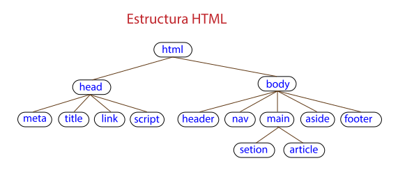

Al hablar de la estructura de una página web <html> podemos distinguir dos partes principales, la cabecera <head> y el cuerpo <body>. La cabecera contiene información importante para la propia página pero que el usuario no ve directamente (salvo el título), y en el cuerpo está el contenido visible de la página.
Vamos a ver las zonas más importantes que hay dentro de ambas partes, para ello utilizaremos el siguiente esquema:
En la cabecera tenemos etiquetas para definir los metadatos <meta> como el juego de caracteres (charset) y el viewport, a continuación el título <title> y enlaces a archivos de hojas de estilo <link> y Javascript <script>. Algunas de estas etiquetas son obligatorias y otras opcionales, pero con reglas en cuanto a donde deben colocarse. Englobando la cabecera y el cuerpo tenemos la etiqueta < html>.Para definir el tipo de documento se utiliza la declaración!DOCTYPE.
Dentro del cuerpo < body > tenemos todo el contenido de la página web, por lo tanto podemos incluir en él prácticamente todas las etiquetas de HTML, sin ninguna regla en cuanto al orden de las etiquetas, sin embargo, es conveniente dar una estructura lógica a la página mediante el uso adecuado de las etiquetas semánticas.Este tipo de etiquetas permiten definir cabeceras < header>, cuerpo principal < main>, secciones < section>, artículos < article>, contenido adicional < aside> y pies < footer>.Dentro de cada una de estas partes podemos colocar las etiquetas que incorporan el contenido, párrafos < p>, títulos(h1, h2, ...), listas, tablas, imágenes, vídeos, ... Si necesitamos hacer algún tipo de agrupación de etiquetas que no está contemplado por las etiquetas semánticas disponemos de la etiqueta < div> que crea un contenedor sin significado semántico.
Las etiquetas semánticas no conllevan ninguna característica de formato ni de ubicación, pero sí tienen un significado semántico que puede ser interpretado por los buscadores y por otro tipo de programas(lectura por voz, accesibilidad, ...)
Otra forma de representar la estructura de una página web es mediante un árbol de nodos, como puedes ver en la figura siguiente

Ver Ejemplo visual: Aquí